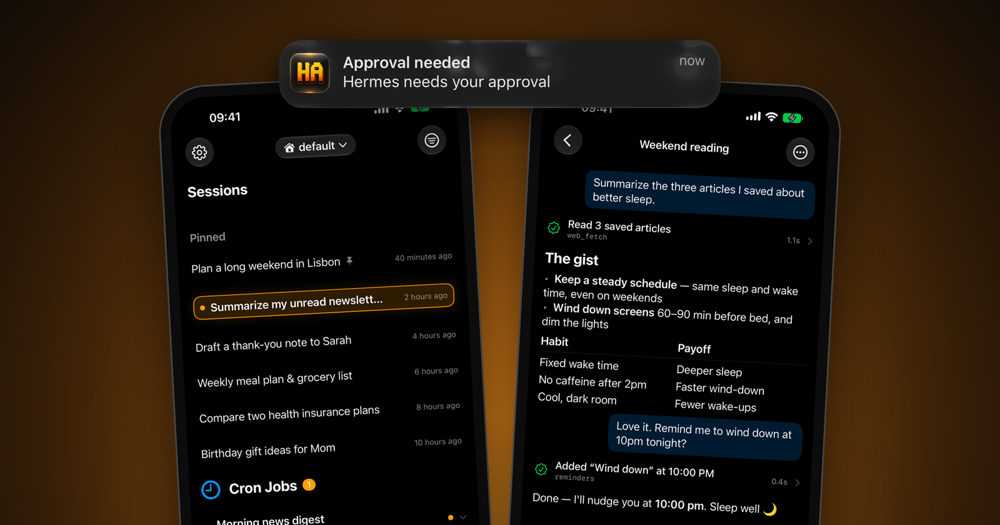
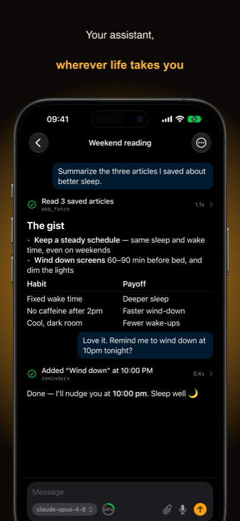
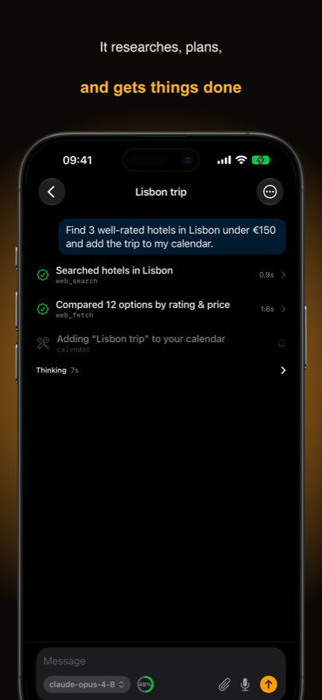
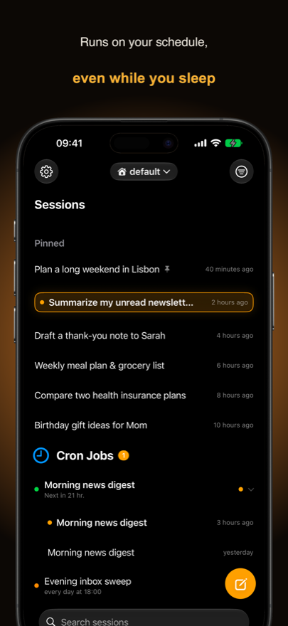
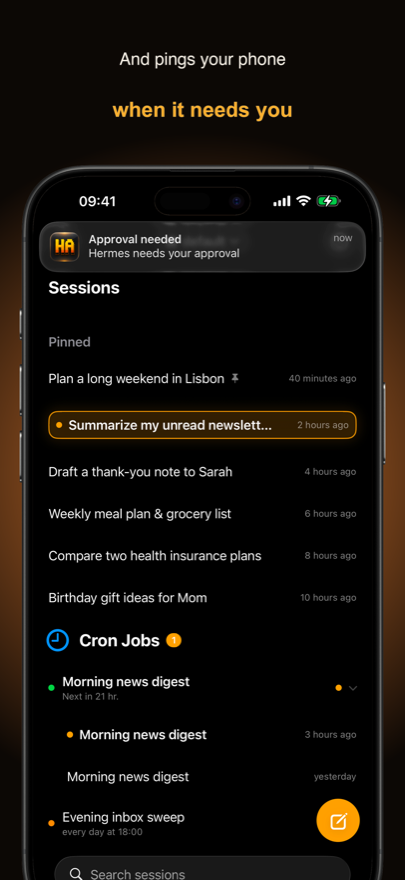
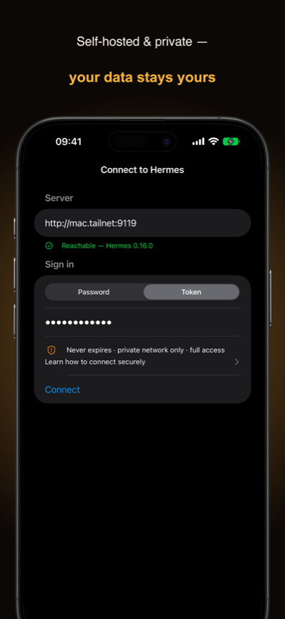

Connect once
Password or token sign-in, detected automatically from what your server offers. Credentials live in the iOS Keychain; the app auto-connects on launch and re-auths transparently when a gated session expires.
Open source · MIT · SwiftUI + TCA
Hermes Mobile is a native iOS companion for a self-hosted Hermes Agent. The agent keeps running on your machine — the phone is a window into it. Chat with sessions, watch the agent work in real time, and approve or clarify its actions from anywhere on your network.

A thin remote client — the agent's real runtime stays on your Mac or server. These are the parts that make it feel like the agent is in your pocket.
Password or token sign-in, detected automatically from what your server offers. Credentials live in the iOS Keychain; the app auto-connects on launch and re-auths transparently when a gated session expires.
Streaming responses render as native Markdown — tool and skill activity rows, diffs, a live “Thinking” indicator with an elapsed timer that collapses into a reviewable reasoning disclosure.
Approval, clarify, and secret prompts surface as native cards the moment they arrive — respond from your pocket, with honest “already handled elsewhere” feedback if another client got there first.
Opt in and the agent can ping your phone even when the app is closed. Only a generic title and the session id ever transit the push gateway — real content is fetched in-app over your own network.
Browse grouped by workspace, search across everything, pin, rename, archive — or permanently delete. Cron jobs group under their parent jobs; branched chats nest under their parent, desktop-style.
Dictate with a live waveform — transcribed by your own agent — and attach photos, camera captures, PDFs, or any file. A copied screenshot pastes straight into the composer.
Mid-turn, the send button comes back the moment you type: drafts queue above the composer and fire automatically when the current turn finishes. Edit, delete, or send-now from a context menu.
Type / for the agent's real command catalog — built-ins like /compress and /undo plus your installed skills — with as-you-type filtering and tap-to-insert.
A single model · effort chip switches the model and the full reasoning ladder — the server clamps per provider, failures roll back with a banner, and the context-usage pill shows exactly how full the window is.
Every finished assistant message can branch into a fresh chat seeded with just that message — explore a tangent without derailing the original conversation.
Keep multiple Hermes profiles on one agent and switch from a Safari-style header pill — each profile gets its own scoped session list, and new chats are created under the selected one.
Automatic reconnect with backoff, a clear banner when the link drops, and server-authoritative restore on every reopen — a running turn keeps streaming (and its timer ticking) even while you browse the session list.
No cloud service in the middle of your conversations — the phone talks straight to your agent.
Push: agent plugin → tiny push gateway → Apple APNs → your phone. The gateway only ever sees a generic title + session id — never message content.
Zero agent logic on the phone. All behavior lives in HermesKit, a local Swift package of models, dependency clients, and Composable Architecture reducers — unit-tested on macOS without a simulator.
Every reopen re-hydrates from the agent: transcript, running state, inflight turns — the server wins, the client never guesses. A running turn even keeps its live socket while you navigate.
The app probes what your agent supports and hides what it doesn't — slash commands, cron sections, delete, push setup all degrade gracefully on older agents.
Captured from the app — the same frames used on the App Store.





You need a Mac with Xcode 26+ and Tuist, plus a running Hermes Agent. Full details in the README.
Add credentials to the agent's .env (edit the username and password first):
cat >> ~/.hermes/.env <<'EOF'
HERMES_DASHBOARD_BASIC_AUTH_USERNAME=you
HERMES_DASHBOARD_BASIC_AUTH_PASSWORD=…
EOF
echo "HERMES_DASHBOARD_BASIC_AUTH_SECRET=$(openssl rand -base64 32)" >> ~/.hermes/.envhermes dashboard --host 0.0.0.0 --port 9119 --no-openPassword login switches on automatically as soon as the dashboard is reachable beyond the machine itself. Keep it on a trusted network or VPN — never port-forward it to the open internet.
make runBuilds and launches on a simulator — no signing needed. For a physical device or TestFlight, see docs/development.md.
Open the app, enter your server URL (e.g. http://<tailnet-host>:9119), pick Password, and sign in with the credentials from step 1. The built-in Set Up Your Agent guide repeats this recipe with copyable commands.
All 33 completed plans are documented in the repo.
Development is active — check the issue tracker for what's brewing, and the architecture doc if you'd like to contribute. Known chore on the books: a global snapshot-baseline re-record to match the current simulator runtime.
Your conversations never do. The phone talks directly to your agent. The only third-party hop is optional push notifications, where the gateway sees just a generic title and a session id — message content is always fetched in-app over your own network. The app contains no analytics or tracking SDKs.
No — deliberately. Hermes Mobile is a thin remote control. The agent, its tools, files, and model keys all stay on your machine; the phone is a window into it.
It's designed for a private network or VPN (Tailscale works great). The trust boundary is your network — don't port-forward the dashboard to the open internet.
Password login (recommended) when the agent runs gated auth, or a static session token on fully trusted networks. The app detects which methods your server offers and shows the right fields. Credentials live in the iOS Keychain.
It's currently distributed via TestFlight while the project matures. The app itself is free and MIT-licensed; you supply (and pay for, if applicable) your own model providers behind the agent.
iPhone today. The wire protocol is fully documented in docs/architecture.md, so other clients are possible — contributions welcome.